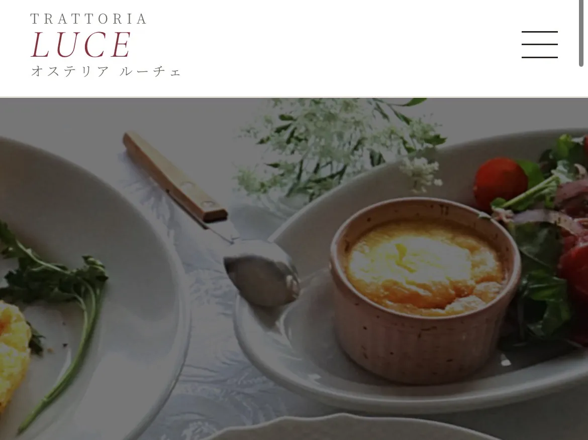

制作実例
これまでにご依頼いただいたホームページ制作の一例をご紹介します。

レストラン・飲食店
TRATTORIA LUCE（オステリア ルーチェ）
「大切な人と過ごす、特別なイタリアン。」をコンセプトにした甲府のレストランサイト。
コーポレートサイト
制作実例 公開準備中
実際の制作事例は近日公開予定です。お楽しみに。
ECサイト
制作実例 公開準備中
実際の制作事例は近日公開予定です。お楽しみに。